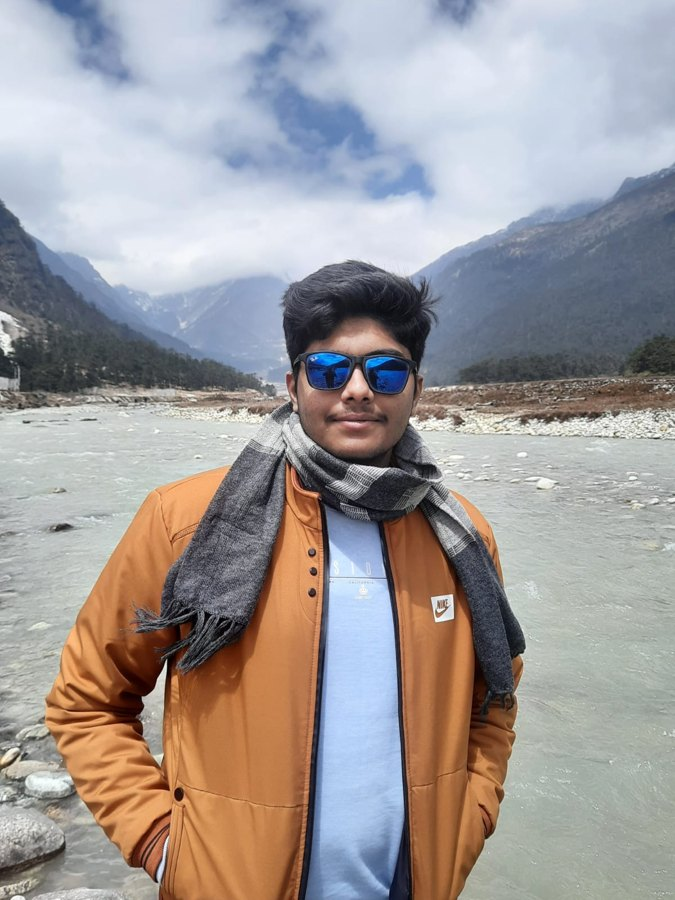
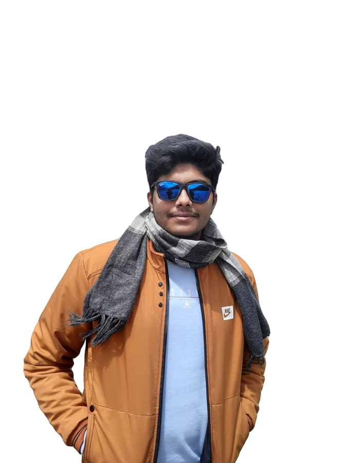
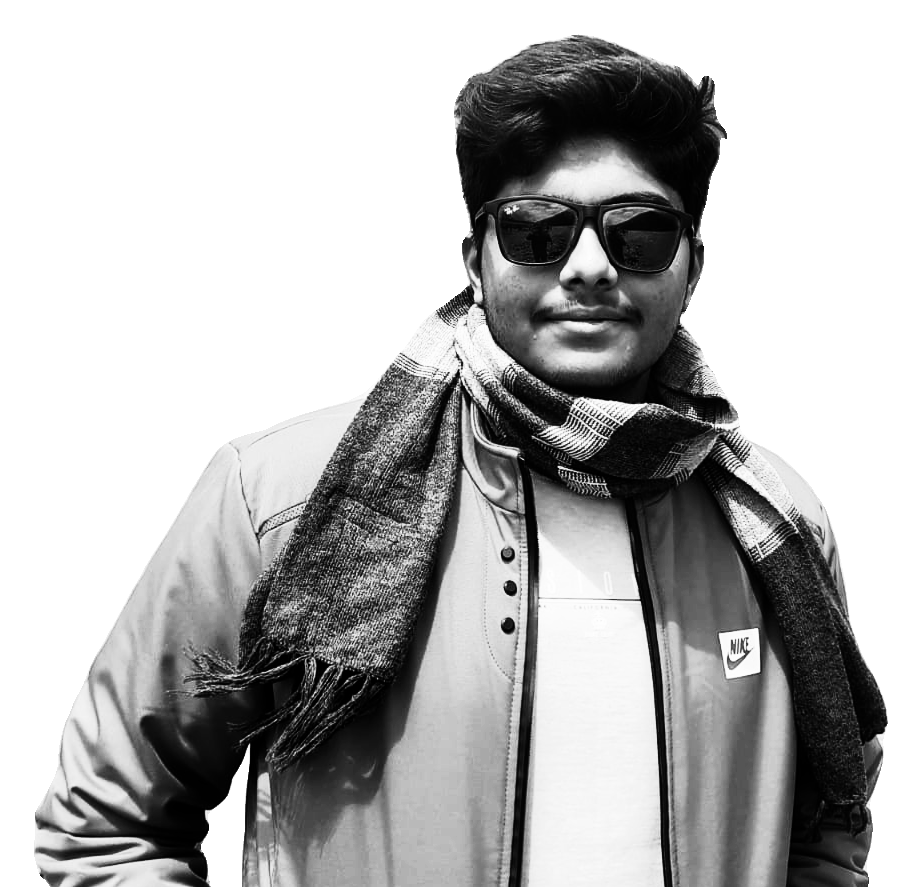

~/personal-website $ ./make_ascii mountains.jpg
From photo to characters
Four steps turn a photo into the portrait for the home page. The last one is live: move your cursor through it.
01 original

The photo as you sent it.
02 cut out

A small AI model finds the person and removes everything else.
03 tone

Cropped to head and shoulders, turned grey, contrast pushed so the face separates from the jacket.
04 characters
The image is cut into a grid. Each cell becomes one character: darker cell, denser character.
05 live
move through it · click to knock it over